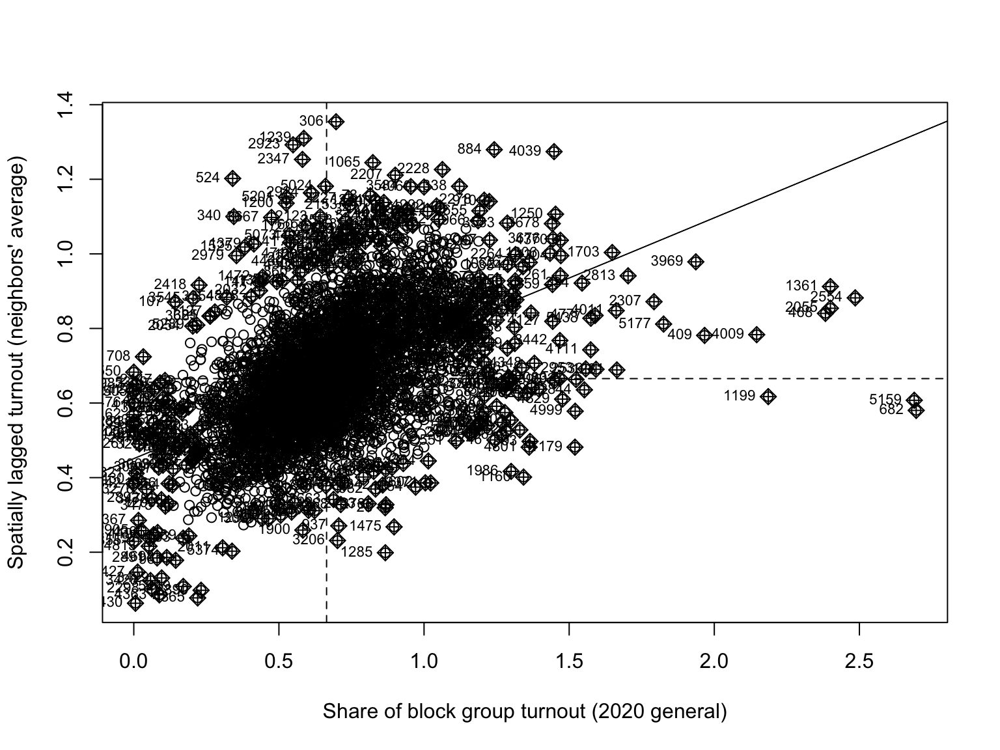
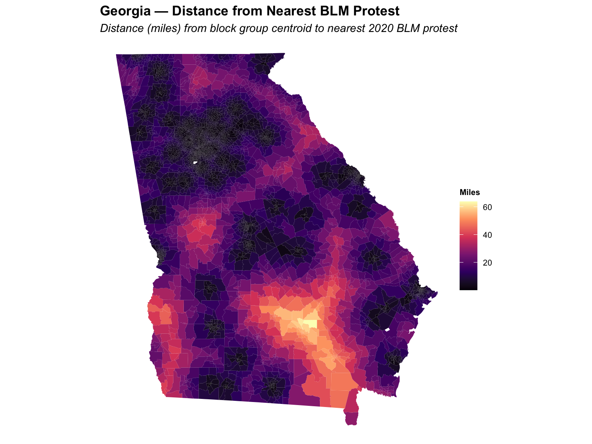
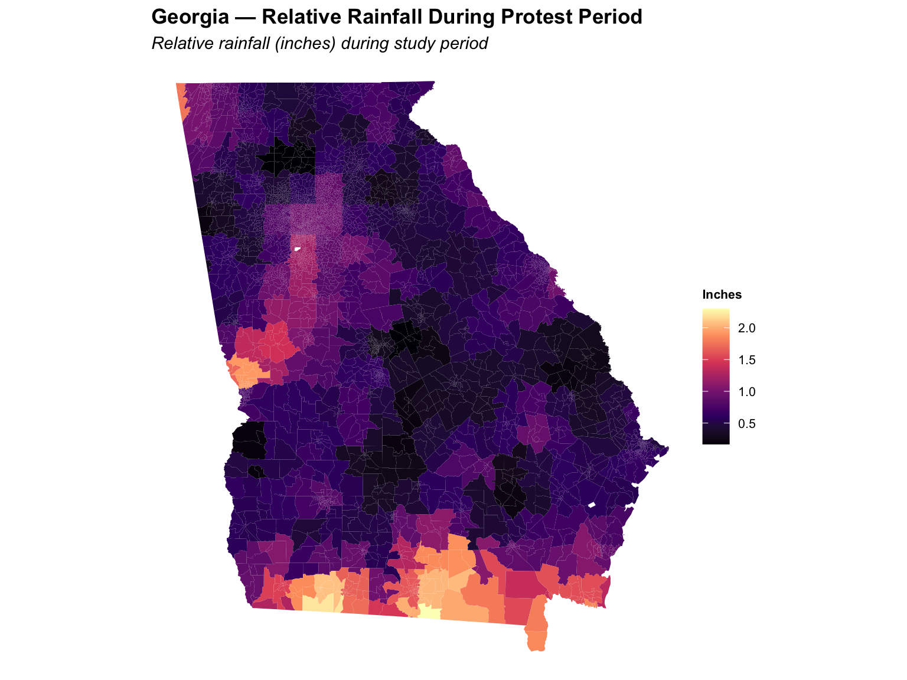

flowchart LR R["Rainfall\n(instrument)"] -->|first stage| D["Protest\nexposure"] D -->|causal effect of interest| T["2020 voter\nturnout"] U["Unobserved\nconfounders"] -.->|bias| D U -.->|bias| T style R fill:#4a90d9,color:#fff style D fill:#e67e22,color:#fff style T fill:#27ae60,color:#fff style U fill:#bbb,color:#333,stroke-dasharray: 5 5
Methods
Instrumental variables, spatial autocorrelation, and the identification strategy
Research Design
The goal is to estimate the causal effect of proximity to a Black Lives Matter protest on 2020 general election turnout at the census block group level in Georgia. Proximity is measured as the straight-line distance (miles) from a block group’s centroid to the nearest 2020 BLM protest event.
Why OLS Fails
Simple OLS regression of turnout on distance is biased because protest locations are not randomly assigned. Protests clustered in urban, high-resource, high-turnout areas — any positive correlation between protest proximity and turnout may reflect pre-existing demographic differences rather than a protest effect.
Identification Strategy: Rainfall as Instrument
We use rainfall on protest days as an instrumental variable for protest exposure. The logic:
- Relevance: Rain reduces protest size and attendance. Block groups with more rainfall during the protest period were, on average, farther from large protests.
- Exclusion: Rainfall on protest days (months before Election Day) has no direct path to November turnout — it operates only through its effect on protest size and location.
This gives us a valid instrument if we are willing to assume that rainfall patterns in May–September 2020 are unrelated to block-group–level political mobilization independent of the protests themselves.
Causal Diagram
Rainfall is excluded from the turnout equation (dashed arrow absent), satisfying the exclusion restriction.
Formal Model
First Stage
\log(\text{dist}_i + 1) = \alpha_0 + \alpha_1 \log(\text{rainfall}_i + 1) + \alpha_2 \text{pop\_dens}_i + \alpha_3 \text{pct\_black}_i + \nu_i
where \hat{\text{dist}}_i (fitted values) is the instrument. The F-statistic on excluded instruments must exceed 10 for the instrument to be considered strong.
Second Stage (2SLS)
\text{turnout}_i = \beta_0 + \beta_1 \widehat{\text{dist}}_i + \sum_t \gamma_t \text{turnout}_{it} + \varepsilon_i
\beta_1 is the causal estimate of interest: the effect of being one mile farther from a protest on block group turnout share.
Reduced Form
\text{turnout}_i = \delta_0 + \delta_1 \log(\text{rainfall}_i + 1) + \sum_t \gamma_t \text{turnout}_{it} + \eta_i
The ratio \hat\delta_1 / \hat\alpha_1 gives the Wald (IV) estimate, which should match the 2SLS coefficient.
Spatial Autocorrelation
Census block groups that are geographically close to each other tend to have similar turnout rates — a violation of the OLS independence assumption. We quantify this with Moran’s I, a spatially-weighted correlation coefficient:
I = \frac{n}{S_0} \frac{\sum_i \sum_j w_{ij}(x_i - \bar{x})(x_j - \bar{x})}{\sum_i (x_i - \bar{x})^2}
where w_{ij} is the spatial weight between units i and j (queen contiguity, row-standardized) and S_0 = \sum_i \sum_j w_{ij}.
Spatial Autocorrelation in Key Variables
| Variable | Moran’s I | p-value |
|---|---|---|
| 2020 Turnout | 0.323 | 0 |
| Distance from protest | 0.970 | 0 |
| Relative rainfall | 0.928 | 0 |

Spatial Model Specification
Lagrange multiplier (LM) tests on the baseline OLS model indicate non-independent error terms arising from both spatial lag and spatial error processes. We therefore estimate a spatial error model:
\text{turnout}_i = X_i \beta + u_i, \quad u_i = \lambda \sum_j w_{ij} u_j + \varepsilon_i
which absorbs spatially structured unobservables into the error term, producing consistent coefficient estimates. For the IV setting, we use the predicted distance from the first stage as the treatment in the spatial error framework — a practical implementation of the spatial 2SLS approach outlined in Betz, Cook & Hollenbach (2019).
Variable Summary

